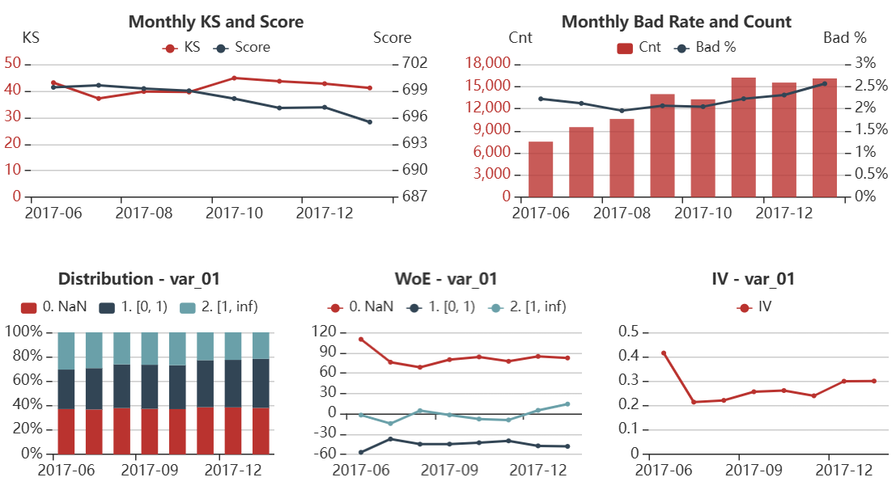

精选项目成果
用量化数据指标，突出从策略到落地的全栈能力。

风控模型 | XGBoost
信贷 A 卡模型迭代
0.5%↓
坏账率降低 0.5%，Gini系数提升 12%，保持通过率稳定。

数据BI | Python ETL
核心报表自动化系统
60%↑
报表生成时间缩短 60%，数据质量校验全流程覆盖。

大模型应用 | LLM Agent
自然语言数据查询工具
70%↑
非技术用户查询效率提升 70%，消除 SQL 编写依赖。